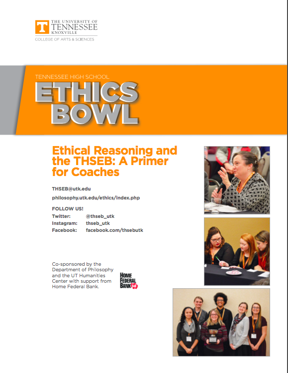

Recent data shows that 83% of the Ethics Bowl participants find their interest in philosophy or ethics increased after the event. Ethics Bowl is indeed unique for its philosophical elements. One of the central questions newcomers tend to ask is whether Ethics Bowl requires some prior knowledge of philosophical theories. A simple answer would be no— philosophical theories are only necessary when they can support your arguments. Philosophers' name dropping wouldn't earn you any point in the match. And considering many of the Ethics Bowl judges are not philosophy majors but have various backgrounds (which is quite recommended in discussions of ethics), citing a theory without further explanation would be useless.

The THSEB Moral Reasoning Primer, developed by Tennessee High School Ethics Bowl, is an excellent overview of the role of moral theories in the Ethics Bowl and a brief introduction on some of the theories, including Consequentialist Ethics, Deontological Ethics, Virtue Ethics , and Care Ethics.
Please feel free to download it from the resources page!
Posted on Feb 02, 2020 by Leo Huang